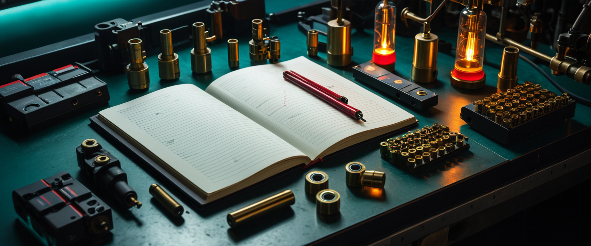

Seven small models and the guidance knob with two meanings
Seven small models arrived for the 8 GB M1. Unfortunately, “small” does not mean “interchangeable”, and “CFG 0” does not even mean the same thing in two programs sitting next to each other.
This is the operating field guide for the seven candidates we nearly called workflows. It starts with model-author cards, official Stability AI material, ComfyUI examples/source and first-party metadata, then checks those recipes against CivitAI generations, Reddit reports, GitHub issues and workflows people actually run. Community claims are labelled as such; popularity does not turn folklore into an architecture specification. Where evidence disagrees, the disagreement stays visible.
For the shorter incident versions, see the zero that ate every prompt, the suitcase containing only an engine, and why square was never the contract.
Read this before touching a sampler
Diffusers guidance_scale=0 is not ComfyUI cfg=0
The ordinary Diffusers Stable Diffusion pipeline enables classifier-free
guidance only when guidance_scale > 1. At 0 or 1 it does one conditional
UNet pass with the positive prompt; it does not evaluate the empty/negative
branch. That is why Stability AI can say “disable guidance with
guidance_scale=0.0” while still getting an image of the requested raccoon.
Diffusers implements that gate explicitly,
and the SD-Turbo card uses guidance_scale=0.0.
ComfyUI's KSampler uses the actual linear CFG equation:
uncond + (cond - uncond) * cfg. Therefore:
- ComfyUI
cfg=1selects the positive conditional prediction and can optimise the negative pass away. - ComfyUI
cfg=0selects the unconditional/negative prediction and discards the positive prediction.
That is not interpretation; it is the
current ComfyUI sampler formula and cfg=1 fast path.
The official ComfyUI SDXL-Turbo workflow also has its sampler CFG field set
to 1.0, not 0
(workflow image with embedded graph).
That workflow is useful evidence for ComfyUI's field value, but it is explicitly
an SDXL-Turbo recipe; its checkpoint, architecture and sampler recipe must
not be quietly relabelled “SD-Turbo”
(official example page).
{kind=link}
This explains our smoking crater: committed sdturbo has ComfyUI cfg=0 and an
empty negative prompt. For a fixed seed and step count, every scene therefore
samples the same empty-prompt branch. Six of the eight seed-42, step-one masters
had byte-identical files and decoded pixels; the remaining two were visually
indistinguishable variants. The machine was being extremely consistent about
ignoring us.
LCM has two different guidance stories
LCM-LoRA on a normal SD 1.5 pipeline is an acceleration adapter. Its author
card recommends 2–8 steps, an LCM scheduler, and disabled guidance or a low
value in the 1–2 range
(LCM-LoRA SD 1.5 card).
In ComfyUI, cfg=1, the lcm sampler, simple or sgm_uniform, and optionally
ModelSamplingDiscrete(lcm) are the corresponding documented ingredients
(official ComfyUI LCM example).
LCM DreamShaper is a dedicated distilled UNet. Its guidance was distilled
into a 256-dimensional timestep-conditioning embedding; its pipeline does not
run an unconditional branch, so negative prompts do not steer it. The model
card uses internal guidance_scale=8, recommends 1–8 steps, and says four is
the fast path
(author card);
the author pipeline constructs and passes the w embedding.
Diffusers documents the dedicated LCM training range as 3–13 and separately
documents the much lower 1–2 range for LCM-LoRA
(official LCM guide).
So no: “both say LCM” is not a licence to copy one CFG number into the other.
Canvas first: wide without pretending 1280×720 is cheap
None of the seven model cards promises a ComfyUI-on-MPS configuration. The primary evidence supports a narrower statement: PyTorch/Diffusers can run Stable Diffusion on Apple Silicon through MPS, but memory pressure causes swapping, attention slicing is recommended below 64 GB, non-standard sizes above 512×512 increase the risk, and batched generation can fail (official Diffusers MPS guide). ComfyUI has had core MPS support since its M1 implementation was merged.
Square was safe, but it was not neutral for a gallery whose prompts were written for 16:9. The useful constraint is pixel area, not ritual devotion to 512×512:
| Canvas | Ratio | Area vs 512² | Use |
|---|---|---|---|
| 640×360 | exact 16:9 | −12% | lowest-memory exact widescreen |
| 640×384 | 5:3 | −6% | SD-Turbo's demonstrated Apple-oriented wide size |
| 704×384 | 11:6 | +3% | conservative near-16:9 SD1.x/SD2.x canvas |
| 768×432 | exact 16:9 | +27% | author-supported fine-tune canvas |
| 768×512 | 3:2 | +50% | common, but no longer a near-512² test |
| 1280×720 | exact 16:9 | +252% | the production gallery size; reject natively on the Mini |
Divisibility by eight is the VAE requirement; multiples of 64 are conservative, not magic. These pre-SDXL models do not carry SDXL's explicit aspect-bucket conditioning. Their wide failures come from excessive area and distance from square training, not from missing a secret bucket ID. Community reports repeatedly show direct oversized SD1.5 first passes cloning people and limbs (report one; report two).
So the admission rule becomes: batch one, one workflow at a time, a model-specific small landscape canvas, then measure MPS allocation and swapping. Fewer steps reduce elapsed work; nobody has shown that they proportionally reduce peak residency.
1. sd15 — the control specimen
Artifact and architecture
Our exact file is
v1-5-pruned-emaonly-fp16.safetensors,
SHA-256
e9476a13728cd75d8279f6ec8bad753a66a1957ca375a1464dc63b37db6e3916.
Comfy Org identifies it as the original EMA-only SD 1.5 model converted to FP16
with a metadata header; it is not claimed to be byte-identical to the original
full-precision file
(archive card).
SD 1.5 is the v1 latent-diffusion UNet/autoencoder family with a fixed CLIP ViT-L/14 text encoder. It resumed from SD v1.2 and trained for 595k steps at 512×512 with text-conditioning dropout for CFG (Runway's original v1 model card).
Canvas, language and conditioning
- Native/training size: 512×512. Our wide admission canvas is 704×384, only 3% more pixels; 640×360 is the exact-16:9 fallback.
- Prompt dialect: concise English natural-language/caption prompts for CLIP ViT-L/14. No trigger token.
- Negative prompt: ordinary CFG negative conditioning; it works when ComfyUI CFG is greater than one.
- CLIP skip: no first-party requirement found.
The architecture, English limitation and known weaknesses in text, faces and complex composition are recorded on the official v1 model card.
Source-backed recipe and parts
The provenance recipe is 50 PLMS steps across evaluated CFG values 1.5–8; the standard Diffusers pipeline default is 7.5. The repository scheduler is PNDM. That is a reproducible reference, not proof that every image needs 50 steps (v1 evaluation; scheduler configuration).
The single checkpoint supplies UNet, CLIP and VAE through core
CheckpointLoaderSimple; no LoRA, external VAE, custom node or CLIP skip is
specified by the source recipe.
What people actually use—and regret
The recurring community production cluster is DPM++ 2M Karras, roughly 20–30 steps and CFG 6–8 (sampler discussion; comparison discussion). That is a useful default, not an official SD1.5 law. CLIP skip 2 is similarly checkpoint-specific folklore, not a universal “more quality” switch (community explanation).
Known bad ideas: direct 1024-class first passes, CFG 12–20, stuffing prompts beyond CLIP's useful context, and declaring a shared negative embedding or face restorer part of the checkpoint. They can improve a product image while destroying the comparison.
Our committed graph: uncertain
The checkpoint, 704×384 latent, bundled CLIP/VAE, real negative prompt and CFG 7
are structurally correct. The mismatch is evidence, not necessarily pixels:
our euler / normal / 2–24 ladder is not the card's 50-step PLMS/PNDM
reference. Treat the ladder as our experiment, not “the SD 1.5 recommended
settings”.
2. sd15lcm — SD 1.5 wearing running shoes
Artifact and architecture
This is the SD 1.5 checkpoint above plus the official
pytorch_lora_weights.safetensors,
renamed locally to lcm-lora-sdv1-5.safetensors. Its SHA-256 is
8f90d840e075ff588a58e22c6586e2ae9a6f7922996ee6649a7f01072333afe4.
The card calls it a 67.5M-parameter distilled consistency adapter for SD 1.5,
not a replacement checkpoint
(author card).
Canvas, language and conditioning
- Native/training size: inherited SD 1.5 512×512. Our admission canvas is 704×384, with 640×360 as the lower-memory fallback.
- Prompt dialect: the underlying SD 1.5 English CLIP dialect; no LCM trigger.
- Negative prompt: at the recommended no/low-guidance setting it has no or
little leverage. ComfyUI
cfg=1skips the negative branch. - CLIP skip: none specified; inherit any requirement of the chosen base.
Source-backed recipe and parts
Use the LCM sampler/scheduler for 2–8 steps, with guidance disabled or between
1 and 2
(adapter card).
ComfyUI specifically calls for low CFG, sampler lcm, scheduler simple or
sgm_uniform, and recommends ModelSamplingDiscrete set to lcm
(official ComfyUI LCM page).
Required pieces are the normal SD 1.5 checkpoint and the LoRA at strength 1. No custom nodes or external VAE/text encoder are required beyond those bundled with the base checkpoint.
What people actually use—and regret
The official ComfyUI graph itself uses LoRA strength 1, five steps, CFG 1.8,
lcm and sgm_uniform; community variants commonly explore strength 0.5–1
and four to six steps
(CivitAI LCM guide).
Reports of dark, soft or artificial texture recur, and simply pushing to 14–24
steps does not restore the undistilled model
(comparison).
Known bad ideas: one step (below this adapter's documented floor), ordinary SD CFG 7–12, the wrong architecture's LCM-LoRA, pairing the LoRA with a normal scheduler, and claiming fewer steps imply lower peak memory.
Our corrected graph: source-backed
The LoRA, strength 1, ModelSamplingDiscrete(lcm), lcm sampler,
sgm_uniform, ComfyUI CFG 1 and 704×384 canvas match the documented pattern.
The ladder is now 2/4/6/8: no invented one-step tier and no truncated ceiling.
3. sdturbo — the prompt was not optional, as it turns out
Artifact and architecture
The exact artifact is
sd_turbo.safetensors,
SHA-256
3f067a1b943cf162f2b8f8588f6cf5824bd5b4c7d1d88d87164b9ca123616549.
Stability AI describes SD-Turbo as an Adversarial Diffusion Distillation model
distilled from Stable Diffusion 2.1, not SD 1.5 and not SDXL
(official model card).
Its UNet has SD2-style 1024-wide cross-attention and epsilon prediction
(official UNet config).
Canvas, language and conditioning
- Native/fixed size: preferably 512×512. Our cautious wide canvas is 640×384, directly demonstrated by an Apple Core ML conversion; 512² remains the fallback.
- Prompt dialect: short English natural-language prompts; no trigger token.
- Negative prompt: explicitly unsupported by the model recipe.
- Guidance: explicitly disabled in Diffusers. In ComfyUI that means
cfg=1, notcfg=0. - CLIP skip: no first-party requirement found.
The same card warns that text is illegible, faces/people can fail, prompt alignment is below SDXL-Turbo, and perfect photorealism is not expected (limitations).
Source-backed recipe and parts
The model's shipped scheduler is EulerDiscreteScheduler, epsilon prediction,
trailing timestep spacing, no Karras sigmas
(scheduler config).
One inference step is the primary recipe; the architecture was distilled for
one to four steps, but the card says one is enough
(model card).
The single checkpoint supplies model, SD2 CLIP and VAE. No LoRA, custom node, external encoder/VAE or CLIP skip is specified.
The official ComfyUI Turbo example uses euler_ancestral,
SDTurboScheduler, one step and CFG 1, but its checkpoint is
sd_xl_turbo_1.0_fp16.safetensors
(embedded official workflow).
Use it to understand ComfyUI's Turbo scheduler and CFG field, not as evidence
that SD-Turbo itself should use the SDXL-Turbo sampler recipe. SD-Turbo's own
packaged Diffusers scheduler is EulerDiscrete with trailing spacing, so our
core-node translation uses ComfyUI's euler sampler plus
SDTurboScheduler.
What people actually use—and regret
CivitAI's original-checkpoint listing independently converges on CFG 1, one step and 512², while noting that three or four steps can be better—or worse (community model page). The stable strengths are speed, single subjects, objects and rough composition; faces, typography and complicated multi-subject layouts remain known weak points. Distillation may also reduce seed diversity, but direct evidence is stronger for SDXL-Turbo than this smaller checkpoint, so that stays a warning, not a verdict.
Known bad ideas: ComfyUI CFG 0, standard SD CFG 7–9, expecting negatives to work at CFG 1, 20–50 steps, confusing this with SDXL-Turbo, and assuming the highest rung wins.
Our corrected graph: source-backed
The graph now uses SamplerCustom, ComfyUI CFG 1, euler and
SDTurboScheduler, preserving the 1–4-step comparison while treating one step
as the primary recipe. The old CFG-0 files are unconditional controls, not
scene renders, and must be replaced.
4. dreamshaper8 — the author actually left settings
Artifact and architecture
Our file is the author's Civitai version 8 artifact
dreamshaper_8.safetensors,
SHA-256
879db523c30d3b9017143d56705015e15a2cb5628762c11d086fed9538abd7fd.
The first-party version metadata identifies it as a pruned FP16 SD 1.5
checkpoint
(version API), and Lykon's
Hugging Face card confirms it is fine-tuned from Runway SD 1.5
(author card).
Canvas, language and conditioning
- Native/base size: SD 1.5-class 512². The author's version-8 examples use 344×512, 512×640, 512×704, 512×768, 512×832 and 768×512 first passes; start wide admission at 768×432—exact 16:9 and fewer pixels than the demonstrated 768×512—with 704×384 as fallback (first-party preview metadata).
- Prompt dialect: natural-language/caption-style SD 1.5 prompts; no required trigger token. The author says v8 can do realism, art and anime rather than prescribing one tag dialect (author notes).
- Negative prompt: standard SD1.x CFG. The author's samples often use
optional external negative embeddings such as
BadDreamandUnrealisticDream; those are not built-in magic words. - CLIP skip: every supplied v8 Civitai preview reports CLIP skip 2, but the Hugging Face recipe does not call it mandatory. Record this as strong sample evidence, not a proved architectural requirement (version metadata).
Source-backed recipe and parts
Lykon's clean Diffusers recipe uses DEISMultistepScheduler and 25 steps
(author card).
The author's v8 preview metadata also shows DPM++ SDE or DPM++ 2M SDE with
Karras, 20–30 first-pass steps and CFG 7–12. Those examples often add LoRAs,
hires fix and ADetailer, so they describe demonstrated settings, not required
dependencies
(first-party version metadata).
No external VAE, text encoder, LoRA or custom node is required by the clean author recipe. CLIP skip 2 deserves an A/B test because the examples use it.
What people actually use—and regret
The creator-image cluster is unusually coherent: DPM++ SDE or DPM++ 2M SDE Karras, 20–30 steps, CFG mostly 7–9 and CLIP skip 2 (CivitAI generation metadata). Many showcase images also use hires fix, LoRAs, negative embeddings or ADetailer; those prove a production stack, not bare-checkpoint quality.
Lykon explicitly advises against face restoration and warns that ADetailer can make identities converge (creator description). Users reporting harsh malformed output at CFG 12.5 were repeatedly steered back toward 6–8 and roughly 25 steps (failure thread).
Known bad ideas: copying the separate DreamShaper LCM recipe onto ordinary v8, calling BadDream/UnrealisticDream built-in features, defaulting to high CFG, and judging the bare model through a face-restoration pass.
Our corrected graph: creator-demonstrated
The artifact now runs at 768×432, CFG 7, CLIP skip 2, DPM++ 2M SDE Karras and a 30-step ceiling with pinned 20/25-step author-recipe rungs. Lower rungs remain the gallery's deliberate convergence experiment, not recommended production settings.
5. dreamlike — one optional password, not a sampler manifesto
Artifact and architecture
Our exact file is
dreamlike-diffusion-1.0.safetensors,
SHA-256
c86a1a99b8c2a2891d9fac4990a8b90cee598d3e16c682fae76c0ab31212983d.
The author describes it as SD 1.5 fine-tuned on high-quality art
(model card).
Canvas, language and conditioning
- Native/base size: SD 1.5-class. The author explicitly prefers slightly higher sizes such as 640×640, 512×768 and 768×512, and recommends portrait 2:3/9:16 or landscape 3:2/16:9 where appropriate (author card). Our admission canvas is therefore 768×432 exact 16:9, below the pixel area of every larger author-recommended example; 704×384 is the fallback.
- Prompt dialect: “same prompts as SD 1.5”.
- Trigger:
dreamlikeartis optional when the model's art style is too weak, not required for every image (author card). - Negative prompt: standard SD1.x CFG; the author publishes no special negative recipe.
- CLIP skip: no first-party requirement found.
Source-backed recipe and parts
The repository declares a DDIMScheduler; the model-card example omits both
step count and guidance, so it inherits the Stable Diffusion pipeline defaults
rather than publishing a model-specific override
(model index;
DDIM config).
The ordinary pipeline defaults are 50 steps and guidance 7.5
(official Stable Diffusion pipeline API).
The single checkpoint supplies the ordinary SD1.5 model/CLIP/VAE set. No LoRA, custom node, external VAE/encoder or CLIP skip is documented.
What people actually use—and regret
Community examples often use roughly 20–30-step DPM++ samplers and CFG 7–10,
but the evidence is much weaker than DreamShaper's creator metadata. Treat
DPM++ 2M Karras as generic SD1.5 practice, not a Dreamlike requirement. The
author's launch discussion reinforces that dreamlikeart controls style
intensity rather than activating the checkpoint
(launch thread).
Known bad ideas: claiming the trigger is mandatory, claiming CLIP skip 2 is mandatory, expecting exact cross-UI seed reproduction, and treating arbitrary pickle conversions as equivalent to the verified safetensors artifact.
Our committed graph: plausible, deliberately comparative
The checkpoint, loader, negative conditioning, CFG 7 and author-supported
768×432 shape are sound. Euler/normal with a 30-step ceiling remains our shared
SD1.x comparison recipe rather than a creator mandate. Missing dreamlikeart
is not a bug unless the scene intends to demand the house style.
6. lcmdreamshaper — rejected: this suitcase contains only the engine
Artifact and architecture
Our exact file is
LCM_Dreamshaper_v7_4k.safetensors,
SHA-256
84feab3a32f1d36108b762b25dad483ca9e37f719b23e0cfd0fdc4ad3fd5409b.
It is a dedicated LCM UNet distilled from the DreamShaper v7 SD 1.5 fine-tune
for 4,000 iterations, not the LCM-LoRA adapter and not DreamShaper 8
(author card).
Most importantly, the standalone safetensors file is UNet weights only. The author's reference script separately loads DreamShaper v7's VAE, CLIP text encoder, tokenizer and safety checker, then loads this file into the UNet (author inference script). Its 3.44 GB size is not evidence that those missing components are secretly inside.
Canvas, language and conditioning
- Demonstrated/default size: 768×768. The author benchmarks at 768² and the
LCM UNet config has
sample_size: 96, which becomes 768 pixels through the ×8 VAE scale (author card; UNet config). A future faithful implementation could test 768×432, only 58% of the demonstrated square area, with 704×384 as fallback. - Prompt dialect: DreamShaper-v7/SD1.5 natural-language CLIP prompts; no trigger token.
- Negative prompt: ineffective in the dedicated LCM pipeline because no unconditional text embedding is evaluated.
- Internal guidance: author default/recommendation is
guidance_scale=8through the model's timestep-conditioning embedding. - CLIP skip: none specified.
The no-negative behavior and internal guidance mechanism are visible directly in the author pipeline and summarised in the official LCM documentation.
Source-backed recipe and parts
Use LCMScheduler, four steps as the reference, with 1–8 recommended and
lcm_origin_steps=50; the model card supplies internal guidance 8
(author card).
In core ComfyUI, a full-parameter LCM UNet is loaded with UNETLoader, patched
with ModelSamplingDiscrete(lcm), and sampled with lcm; a separate compatible
base checkpoint supplies CLIP and VAE. ComfyUI's own example workflow uses
exactly that split
(official maintainer workflow in the LCM support issue).
That example uses an SDXL LCM, so its CFG, canvas and base checkpoint are not
DreamShaper settings; the reusable fact is the UNet-only loading topology.
All those loader nodes are core ComfyUI nodes. The guidance path is not.
ComfyUI's ModelSamplingDiscrete(lcm) patches the noise schedule and output
parameterisation; it does not inject the model's learned 256-dimensional
guidance embedding.
What people actually use—and regret
Native ComfyUI reports only begin working after the UNet is loaded correctly,
paired with compatible SD1.5 CLIP/VAE, and sampled with lcm, low external CFG
and very few steps
(ComfyUI issue).
Copying Diffusers guidance_scale=8 into KSampler CFG 8 is the wrong mechanism;
adding LCM-LoRA on top double-applies acceleration weights; and loading the raw
UNet through CheckpointLoaderSimple asks an engine for seats and windows.
Repository decision: remove, do not fake
Our graph did exactly that last bad idea: it fed a UNet-only file to
CheckpointLoaderSimple and requested CLIP and VAE outputs that do not exist.
Even after repairing the loader, ordinary KSampler cannot reproduce the
author's learned guidance embedding. The candidate has therefore been removed
from the executable catalog. It can return only with an explicit custom-node or
Diffusers integration that implements the real pipeline; “it emitted pixels”
is not an admission standard.
7. sd21 — the 512 model, not its 768 sibling
Artifact and architecture
Our file is
v2-1_512-ema-pruned.safetensors
from the public mirror, SHA-256
df955bdf6b682338ea9b55dfc0d8f3475aadf4836e204893d28b82355e0956d2,
size 5,214,604,494 bytes. Those are the same identity values published for the
original Stability AI artifact, so this is a byte-identical mirror, not a
model substitution
(official Stability AI artifact location;
mirror artifact pointer).
This is Stable Diffusion 2.1 Base at 512, a latent diffusion model using OpenCLIP ViT-H text conditioning. It is not the separate 768-v checkpoint (Stability AI model card). The 512 pipeline config is epsilon prediction; the 768 sibling is the v-prediction variant (512 scheduler config).
Canvas, language and conditioning
- Native/training size: 512×512; the base trained at 256 then 512 and v2.1 added 220k further steps. Our conservative wide canvas is 704×384, only 3% more pixels; 640×360 is the fallback.
- Prompt dialect: English natural language through OpenCLIP ViT-H; no trigger token.
- Negative prompt: ordinary CFG negative conditioning works.
- CLIP skip: no first-party requirement found.
Those details and the model's weak text/faces/compositionality limitations are on the Stability AI card.
Source-backed recipe and parts
Stability AI's example replaces the default PNDM/PLMS scheduler with
EulerDiscreteScheduler; its evaluation uses 50 DDIM steps across CFG
1.5–8
(official card).
As with SD1.5, that is a provenance reference. The ordinary pipeline guidance
default is 7.5
(Stable Diffusion API).
The single checkpoint supplies the SD2.1 UNet, OpenCLIP text encoder and VAE. No LoRA, external VAE/encoder, custom node or CLIP skip is specified.
What people actually use—and regret
Community practice clusters around Euler/normal at roughly 20 steps and CFG 4–8, or DPM++ 2M Karras at 25–30 (ComfyUI comparison). Stability itself emphasized negative prompts for anatomy, framing, blur, text and watermarks (release notes). Broad negative lists can also erase the intended style, so the list should be literal rather than ceremonial.
Known bad ideas: loading the 512 epsilon checkpoint as its 768 v-pred sibling, using 768² because “2.1” appears in both names, reusing SD1.5 LoRAs/embeddings, running without useful negatives then blaming OpenCLIP, CFG 12–20, and hundreds of steps. The wrong 512/768 config famously produces solid brown, black or nonsense images (launch discussion).
Our committed graph: community-backed baseline
The exact artifact, 704×384 canvas, CheckpointLoaderSimple, negative prompt,
epsilon auto-detection and CFG 7 are correct in shape and semantics. Our
euler / normal graph and 30-step ceiling match common ComfyUI practice;
the low rungs remain the gallery's experiment rather than a production recipe.
What changed before another matrix run
- SD-Turbo now uses ComfyUI CFG 1, Euler and
SDTurboScheduler. Existing CFG-0 outputs are deprecated unconditional controls. - SD1.5 LCM-LoRA now starts at two steps and reaches eight, using the
official
sgm_uniformoption. - DreamShaper 8 now carries its own recipe: CLIP skip 2, DPM++ 2M SDE Karras, CFG 7 and author-demonstrated 20/25/30-step rungs.
- The small models are wide again, at 640×384, 704×384 or 768×432 according to their evidence instead of one square pretending to fit all.
- LCM DreamShaper left the executable catalog. A future implementation must load the UNet correctly and implement learned guidance conditioning.
- Classic low rungs remain labelled experiments. A convergence gallery is allowed to ask what happens at two steps; it is not allowed to call two steps the author's recommendation.
Seven suitcases, then. One had the steering wheel connected backwards, one contained only an engine, and several arrived with Reddit recipes taped over their passports. Six are now honest workflows. The seventh is an honest rejection, which is more useful than 120 confidently meaningless PNGs.